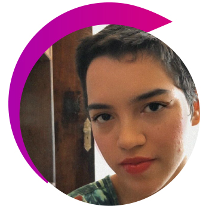

Edmundo Torrejón
Argentina
Ver Bio
Médico, Academia Boliviana de Cirugía, Colegio Internacional de Cirujanos. Médico del Papa Juan Pablo II en su arribo a Tarija – Bolivia.
Escritor, Presidente del PEN Tarija , Cónsul Poetas del Mundo, Embajador IFLAC PAVE PEACE International. Presidente ASOLAPO-Bolivia. Past Presidente de la Alianza Francesa, Past Presidente de la Sociedad Escritores de Bolivia, Secretario de Relaciones Internacionales de la Sociedad de Escritores de Bolivia, entre otras.
Escritor, Presidente del PEN Tarija , Cónsul Poetas del Mundo, Embajador IFLAC PAVE PEACE International. Presidente ASOLAPO-Bolivia. Past Presidente de la Alianza Francesa, Past Presidente de la Sociedad Escritores de Bolivia, Secretario de Relaciones Internacionales de la Sociedad de Escritores de Bolivia, entre otras.

Amal Eqeiq
Ver Bio
Profesora asistente de estudios árabes y literatura comparada en Williams College.
Actualmente está trabajando en su manuscrito, Afinidades indígenas: estudio comparativo en narrativas mayas y palestinas.
Su investigación interdisciplinaria incluye literatura árabe moderna, cultura popular, estudios palestinos, feminismo(s), estudios de performance, traducción, estudios indígenas en las Américas, el Sur Global, historia literaria, hip-‐hop, estudios fronterizos críticos y decolonialidad.
Actualmente está trabajando en su manuscrito, Afinidades indígenas: estudio comparativo en narrativas mayas y palestinas.
Su investigación interdisciplinaria incluye literatura árabe moderna, cultura popular, estudios palestinos, feminismo(s), estudios de performance, traducción, estudios indígenas en las Américas, el Sur Global, historia literaria, hip-‐hop, estudios fronterizos críticos y decolonialidad.

Amanda Soares
Ver Bio
Graduada en Letras UFBA, Investigadora en el área de Literatura y cultura, escritora e influencer digital en la página @arteamare.
Fundadora de PCDSA (Proyecto social que visibiliza la identidad de PCD y sus pluralidades), autora del libro “Todos los girasoles que encontré en tu cuerpo” - Editora Amazon (Lanzamiento 2021).
Fundadora de PCDSA (Proyecto social que visibiliza la identidad de PCD y sus pluralidades), autora del libro “Todos los girasoles que encontré en tu cuerpo” - Editora Amazon (Lanzamiento 2021).
Andrea Marqués
Ver Bio
Graduada en Derecho por la Universidade Católica do Salvador (1997) y Especialización por la Faculdade Ruy Barbosa (2012).
Enseñó Derecho Administrativo Sanitario en la Faculdade São Camilo de Salvador-BA, en el curso de Postgrado en Vigilancia Sanitaria (2014).
Enseñó Derecho Administrativo Sanitario en la Faculdade São Camilo de Salvador-BA, en el curso de Postgrado en Vigilancia Sanitaria (2014).

Andrés Isch
Ecuador
Ver Bio
Abogado por la Universidad Internacional del Ecuador, tiene una Maestría en Políticas Públicas por la Universidad del Desarrollo de Chile. Realizó el Programa de Gobernanza y Liderazgo Político de la Escuela de Gobierno IDE – Universidad de Los Hemisferios, y el Executive Program in Leadership Decision Making de Harvard Kennedy School.
Bibiana Aido Almagro
España
Ver Bio
Representante de ONU Mujeres en la Oficina de Ecuador. Cuenta con una amplia experiencia en la organización, a la que se vinculó en 2011.
Carmen Aido Lazo
Ver Bio
Trabajó como Agente de Programa y Coordinador Diputado del Informe de Desarrollo Humano en el Programa de las Naciones Unidas para el Desarrollo. También trabajó en el Ministerio de Economía como un asesora en asuntos de energía, comercio internacional, zonas libres, estadística y negociaciones con sectores diferentes.

Consuelo Cruz
España
Ver Bio
Política española de origen colombiano que manifiesta ser orgullosamente afrocolombiana. Conferencista internacional, y reconocida activista en contra de la violencia de género, la lucha por los derechos humanos y de las comunidades africanas y afrodescendientes.
Es la primera persona africana, afrodescendiente, negra en ser propuesta en 40 años de democracia en España, como candidata al Congreso de los Diputados por el Partido Socialista Obrero Español (PSOE).
Es la primera persona africana, afrodescendiente, negra en ser propuesta en 40 años de democracia en España, como candidata al Congreso de los Diputados por el Partido Socialista Obrero Español (PSOE).
Cumanda Guevara Aguilar
Ver Bio
Mujer emprendedora, Cabeza de familia, Doctora en Naturopatía que a través de sus conocimientos en medicina natural ha luchado por impulsar la medicina ancestral de sus pueblos indígenas para fomentar el desarrollo y el empoderamiento de los sectores más necesitados, ecologista amante de la Naturaleza.

Dino Raul Jimenez
Perú
Ver Bio
Consultor en planes de Desarrollo y proyectos de cooperación Internacional. Becario del departamento de Estado de los Estados Unidos. Magister en Economía con mención en Formulación y Evaluación de proyectos de Inversión Pública. Estudios en The George Washington University.

Miriam Estrada Castillo
Ver Bio
Doctora en Jurisprudencia y Ciencias Sociales y Políticas (con Honores), Máster en Derechos Humanos con mención en Migración y Extranjería por la Universidad Nacional de España (UNED), Abogada especializada en Derecho Internacional, Derecho Penal Internacional, Derechos Humanos, Democracia, Seguridad, Desarme, Contraterrorismo y Contra radicalización.

Carol Hullin
Chile
Ver Bio
Especialista Principal en TIC de eSalud en el banco mundial en la Unidad de Tecnología de la Información y la Comunicación (TIC). Actualmente brinda apoyo cruzado principalmente al sector de la salud en cuatro regiones a nivel mundial, principalmente mediante el diseño y desarrollo de métodos correctos para usar las TIC en la salud utilizando estándares.
Eloisa Souza Arruda
Ver Bio
Fiscal y directora de la Escuela Superior del Ministerio Público (ESMP).
Ver Bio
Fue directora de noticias de Ecuavisa en 1990. Fue promotora cívica de la alcaldía de León Febres-Cordero Ribadeneyra en Guayaquil, desde 1992 al 2000.
Actualmente es la Directora de Turismo y Promoción Cívica de la Muy Ilustre Municipalidad de Guayaquil.
Actualmente es la Directora de Turismo y Promoción Cívica de la Muy Ilustre Municipalidad de Guayaquil.
Ver Bio
Gloria de los Ángeles Treviño Ruiz (Monterrey, 15 de febrero de 1968), conocida artísticamente como Gloria Trevi, es una cantante, actriz, bailarina y compositora mexicana.

Ver Bio
Gerente de Mastercard Ecuador.
De padres ecuatorianos, nació en los Ángeles-California, por lo que tiene doble nacionalidad, lo que le ha facilitado trabajar en países del mundo. Su siguiente lección fue al terminar su educación superior y cuando comenzó a trabajar en un emprendimiento familiar (de confección de sacos para instituciones financieras). Luego de involucrarse de cerca en la industria del retail.
Ver Bio
Directora del Centro de Información de las Naciones Unidas para Colombia, Ecuador y Venezuela.
Directora de Promoción y Comunicaciones Globales de la agencia especializada de la ONU y la institución financiera internacional, el FIDA, el Fondo Internacional para el Desarrollo Agrícola.
Directora de Promoción y Comunicaciones Globales de la agencia especializada de la ONU y la institución financiera internacional, el FIDA, el Fondo Internacional para el Desarrollo Agrícola.

Ver Bio
Empresaria ecuatoriana conocida por su incursión en los negocios agrícola, inmobiliario, industrial, comercial y turístico, a través del Consorcio Nobis -uno de los grupos empresariales más grandes de Ecuador- del que Noboa es fundadora y presidenta ejecutiva.
Ver Bio
Cuencana que decidió levantarse un día y lograr sus objetivos desde Guayaquil. Con lucha y mucho esfuerzo y sacrificio logró abrir un pequeño negocio de venta de pelucas que con el tiempo se convirtió en el número uno en el país en venta de disfraces.
Ver Bio
Política y abogada colombiana, actual Vicepresidente y Ministra de relaciones exteriores de Colombia.

Ver Bio
Asesoramiento a Municipios, Asesora Legislativa, Honorable Cámara de Diputados de la Provincia de Buenos Aires, Experta en Gobiernos Locales Abiertos y Misionera de la Paz.

Ver Bio
Líder indígena y activista guatemalteca, miembro del grupo maya quiché, defensora de los derechos humanos, embajadora de buena voluntad de la UNESCO y ganadora del Premio Nobel de la Paz (1992) y el Premio Príncipe de Asturias de Cooperación Internacional (1998).

Ver Bio
Primera mujer Presidenta y Vicepresidenta Constitucional de la República del Ecuador. Fue Viceministra de Cultura y Ministra de Educación. Ex Secretaria General de la Organización del Tratado de Cooperación Amazónica.
Es abogada, doctora en jurisprudencia, egresada de periodismo y Máster en antropología.
Es abogada, doctora en jurisprudencia, egresada de periodismo y Máster en antropología.

Ver Bio
Galardonada emprendedora nacida en Colombia con más de 7 años de experiencia práctica en plataformas de datos y tecnología y más de 20 años en roles ejecutivos.
Experta en computación espacial y desarrolladora. Está obsesionada con tener más mujeres preparadas para resolver problemas con la tecnología.
Experta en computación espacial y desarrolladora. Está obsesionada con tener más mujeres preparadas para resolver problemas con la tecnología.
Ver Bio
Tatiana Palacios Chapa, conocida simplemente como Tatiana y por su apodo La Reina de los Niños, es una cantante, actriz y presentadora mexicana de origen estadounidense.

Ver Bio
Presentadora de televisión, actriz, psicóloga clínica y magíster en Terapia Familiar Sistémica con experiencia en consulta privada, instituciones educativas y de salud mental.
Actualmente es concejal de Guayaquil por el Partido Social Cristiano, representando al distrito electoral 3.
Actualmente es concejal de Guayaquil por el Partido Social Cristiano, representando al distrito electoral 3.

Ver Bio
Posicionada dentro de las 12 mujeres influyentes de la política latinoamericana y los 100 consultores sobresalientes del mundo en el 2017 y 2019 por los premios Napolitan Victory Awards de Estados Unidos.
Actualmente es reconocida por la Asociación latinoamericana de consultores políticos ALACOP como una de las consultoras latinas más destacadas.
Actualmente es reconocida por la Asociación latinoamericana de consultores políticos ALACOP como una de las consultoras latinas más destacadas.